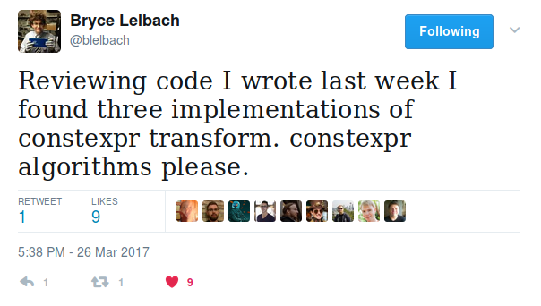

We want to do this:
constexpr auto jsv = R"({ "feature-x-enabled": true, "value-of-y": 1729, "z-options": {"a": null, "b": "joshua", "c": [6, 28, 496]} })"_json; if constexpr (jsv["feature-x-enabled"]) { // code for feature x } else { // code when feature x turned off }
constexprconstexpr History 101
A Short, Incomplete (and Mostly Wrong?) History of constexpr
constexpr: The First Ageconstexpr math functions exploredthrow link error trick discoveredconstexpr FNV1 string hash discoveredconstexpr: End of the First Age// 1. Fall of Gondolin // 2. Balrogs destroyed // 3. Morgoth defeated and cast into the Timeless Void // 4. constexpr string hashing discovered constexpr uint64_t fnv1(uint64_t h, const char* s) { return (*s == 0) ? h : fnv1((h * 1099511628211ull) ^ static_cast<uint64_t>(*s), s+1); }
constexpr: The Second Ageconstexpr supported by Visual C++constexpr string hashing (e.g. Murmur3) discoveredconstexpr libraries start to appearconstexpr: End of the Second Age
(Also: Last Alliance of Elves & Men, Isildur takes up the hilt of Narsil and cuts the One Ring from Sauron's hand.)
constexpr: The Third Age?constexpr lambdasif constexprconstexpr STL proliferation?constexpr cryptographic hashesarraystringstring_viewpairoptionalvariantconstexpr already
Parser a :: String -> [(a, String)]
"A parser for things is a function from strings to lists of pairs of things and strings."
Or in our case something like:
template <typename T> using parser = auto (*)(string) -> list<pair<T, string>>;